화공기사(구) (2013-03-10 기출문제)
1과목: 화공열역학
1. 표준디젤사이클의 P-V선도에 해당하는 것은?
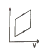
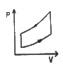
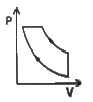
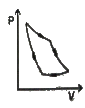
(정답률: 70%)

2. 두 절대온도 T1, T2(T1＜T2)이에서 운전하는 엔진의 효율에 관한 설명 중 틀린 것은?
- 가역과정인 경우 열효율이 최대가 된다.
- 가역과정인 경우 열효율은 (T2-T1)/T2 이다.
- 비가역 과정인 경우 열효율은 (T2-T1)/T2보다 크다.
- T1이 0K인 경우 열효율은 100%가 된다.
(정답률: 70%)
3. 기체-액체 평형을 이루는 순수한 물에 대한 다음 설명 중 옳지 않은 것은?
- 자유도는 1이다.
- 기체의 내부에너지는 액체의 내부에너지 보다 크다.
- 기체의 엔트로피가 액체의 엔트로피 보다 크다.
- 기체의 깁스에너지가 액체의 깁스에너지보다 크다.
(정답률: 70%)
4. 과잉특성과 혼합에 의한 특성치의 변화를 나타낸 상관식으로 옳지 않은 것은? (단, H:엔탈피, V:용적, M:열역학특성치, id:이상 용액 이다.)
- HE=△H
- VE=△V
- ME=M-Mid
- △ME=△M
(정답률: 56%)
5. 이상기체 3mol이 50℃에서 등온으로 10atm에서 1atm까지 팽창할 때 행해지는 일의 크기는 몇 J인가?
- 4433
- 6183
- 18550
- 21856
(정답률: 74%)
6. 이상용액의 활동도계수 γ는 어느 값을 가지는가?
- γ＞1
- γ＜1
- γ= 0
- γ= 1
(정답률: 71%)
7. 이상기체에 대하여 일(W)이 다음과 같은 식으로 표현될 때, 이 계는 어떤 과정으로 변화하였는가? (단, Q는 열, V1은 초기부피, V2는 최종부피이다.)
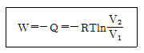
- 단열 과정
- 등압 과정
- 등온 과정
- 정용 과정
(정답률: 73%)
8. 퓨개시티(Fugacity) fi 및 퓨개시티 계수에 관한 설명으로 틀린 것은? (단,
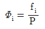
이다.)- 이상 기체에 대한 fi/P의 값은 1이 된다.
- 잔류 깁스(Gibbs) 에너지
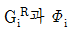
의 관계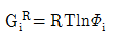
로 표시 된다. - 퓨개시티 계수
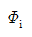
의 단위는 압력의 단위를 가진다. - 주어진 성분의 퓨개시티가 모든 상에서 동일할 때, 접촉하고 있는 상들은 평형상태에 도달할 수 있다.
(정답률: 67%)
9. 다음 중 잠열에 해당되지 않는 것은?
- 반응열
- 증발
- 융해열
- 승화열
(정답률: 73%)
10. 다음 중 에너지 변화를 나타내지 않는 것은? (단, P : 압력 S : 엔트로피 T : 절대온도 V : 부피 m : 질량 Cp: 정압열용량 )
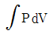
- TdS+VdP
- △S
- mCp△T
(정답률: 66%)
11. 0℃로 유지되고 있는 냉장고가 27℃의 방안에 놓여 있다. 어떤 시간동안에 1000cal의 열이 냉장고 속으로 새어 들어 갔다고 한다. 방안의 공기의 엔트로피 변화의 크기는 몇 cal/K인가?
- 3
- 6
- 30
- 60
(정답률: 60%)
12. 다음 중 기-액 상평형 자료의 건전성을 검증하기 위하여 사용하는 것으로 가장 옳은 것은?
- 깁스-두헴(Gibbs-Duhem)식
- 클라우지우스-클레이페이론(Clausius-Clapeyron) 식
- 맥스웰 관계(Maxwell relation)식
- 헤스의 법칙(Hess’s Law)
(정답률: 70%)
13. 1kWh는 약 몇 kcal에 해당되는가?
- 860
- 632
- 550
- 427
(정답률: 69%)
14. 어떤 기체가 부피는 변하지 않고서 150cal의 열을 흡수하여 그 온도가 30℃로부터 32℃로 상승하였다. 이 기체의 △U는 얼마인가?
- 50cal
- 75cal
- 150cal
- 300cal
(정답률: 60%)
15. 초기에 1몰의 H2S와 2몰의 O2를 포함하는 계에서 다음 반응이 일어난다. 반응이 일어나는 동안 O2와 H2S의 몰분율을 반응좌표 Є의 함수 로 옳게 나타낸 것은?
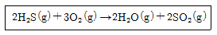
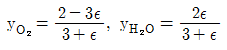
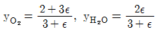
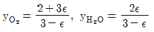
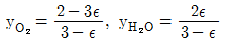
(정답률: 68%)
16. 어떤 연료의 발열량이 10000kcal/kg일 때 이 연료 1kg이 연소해서 30%가 유용한 일로 바뀔수 있다면 500kg의 무게를 들어올릴 수 있는 높이는 약 얼마인가?
- 26m
- 260m
- 2.6km
- 26km
(정답률: 71%)
17. 액상과 기상이 서로 평형이 되어 있을 때에 대한 설명으로 틀린 것은?
- 두 상의 온도는 서로 같다.
- 두 상의 압력은 서로 같다.
- 두 상의 엔트로피는 서로 같다.
- 두 상의 화학포텐셜은 서로 같다.
(정답률: 68%)
18. 오토(Otto)엔진과 디젤(Diesel)엔진에 대한 설명 중 틀린 것은?
- 디젤엔진에서는 압축 과정의 마지막에 연료가 주입된다.
- 디젤 엔진의 효율이 높은 이유는 오토 엔진보다 높은 압축비로 운전할 수 있기 때문이다.
- 디젤 엔진의 연소 과정은 압력이 급격히 변화하는 과정 중에 일어난다.
- 오토 엔진의 효율은 압축비가 클수록 좋아진다.
(정답률: 57%)
19. 1100K, 1bar에서 2mol의 H2O와 1mol의 CO가 다음과 같이 전이반응한다. 이 반응의 표준 깁스(Gibbs) 에너지 변화는 △G°= 0이다. 혼합물을 이상기체로 가정하면, 반응한 수중기의 분율은?
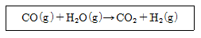
- 0.333
- 0.367
- 0.500
- 0.667
(정답률: 46%)
20. 압력 20Pa, 온도 200K의 초기상태의 이상기체가 정용과정(constant volume process)을 통하여 온도 800K까지 가열되었다면 나중 압력은?
- 5Pa
- 20Pa
- 40Pa
- 80Pa
(정답률: 75%)
2과목: 단위조작 및 화학공업양론
21. 도관 내 흐름을 해석할 때 사용되는 베르누이식에 대한 설명으로 틀린 것은?
- 마찰손실이 압력손실 또는 속도수두 손실로 나타나는 흐름을 해석할 수 있는 식이다.
- 수평흐름이면 압력손실이 속도수두 증가로 나타나는 흐름을 해석할 수 있는 식이다.
- 압력수두, 속도수두, 위치수두의 상관관계 변화를 예측할 수 있는 식이다.
- 비점성, 비압축성, 정상상태, 유선을 따라 적용할 수 있다.
(정답률: 50%)
22. 탄산가스 30vol%, 일산화탄소 5vol%, 산소 10vol%, 질소55vol%인 혼합가스의 평균 분자량은? (단, 모두 이상기체로 가정한다.)
- 33.2
- 43.2
- 45.2
- 47.2
(정답률: 61%)
23. 1atm, 100℃의 1000kg/h 포화수증기(△H=2676kJ/kg)와 1atm, 400℃의 과열수증기(△H=3278kJ/kg)가 단열 혼합기로 유입되어 1atm, 300℃의 과열수증기(△H=3074kJ/kg)가 배출될때 배출되는 양(kg/h)은?
- 2921
- 2931
- 2941
- 2951
(정답률: 37%)
24. 에탄올 20wt% 수용액 200kg을 증류장치를 통하여 탑 위에서 에탄올 40wt% 수용액 20kg을 얻다. 탑 밑으로 나오는 에탄올 수용액의 농도는 약 얼마인가?
- 3wt%
- 8wt%
- 12wt%
- 18wt%
(정답률: 62%)
25. 1atm, 비점(78℃)에서 에탄올의 분자증발열은 38580J/mol이다. 70℃에서 에탄올의 증기압은 몇 mmHg인가?
- 558.3
- 578.3
- 598.3
- 618.3
(정답률: 30%)
26. 10ppm SO2을 %로 나타내면?
- 0.0001%
- 0.001%
- 0.01%
- 0.1%
(정답률: 67%)
27. 0℃, 1atm에서 22.4m3의 가스를 정압하에서 3000kcal의 열을 주었을 때 이 가스의 온도는? (단, 가스는 이상기체로 보고 정압 평균분자 열용량은 4.5kcal/kmol*℃이다.)
- 500.0℃
- 555.6℃
- 666.7℃
- 700.0℃
(정답률: 65%)
28. 40℃에서 벤젠과 톨루엔의 혼합물이 기액평형에 있다. Raoult의 법칙이 적용된다고 볼 때 다음 설명 중 옳지 않은 것은? (단, 40℃에서의 증기압은 벤젠 180mmHg, 톨루엔 60mmHg이고, 액상의 조성은 벤젠30mol%, 톨루엔 70mol%이다.)
- 기상의 평형분압은 톨루엔42mmHg이다.
- 기상의 평형분압은 벤젠54mmHg이다.
- 이 계의 평형전압은 240mmHg이다.
- 기상의 평형조성은 벤젠56.25mol%, 톨루엔 43.75mol%이다.
(정답률: 62%)
29. 이상기체를 T1에서 T2까지 일정압력과 일정 용적에서 가열할 때 열용량에 관한 식 중 옳은 것은? (단, Cp는 정압열용량이고, Cv는 정적열용량이다.)
- Cp+Cv=R
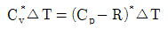
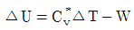
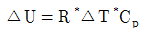
(정답률: 61%)
30. 반응에 관한 설명으로 옳지 않은 것은?(오류 신고가 접수된 문제입니다. 반드시 정답과 해설을 확인하시기 바랍니다.)
- 강산과 강염기의 중화열은 일정하다.
- 수소이온의 생성열은 편의상 0으로 정한다.
- 약산과 강염기의 중화열은 강산과 강염기의 중화열과 같다.
- 반응전후의 온도 변화가 없을 때 엔탈피 변화는 0이다.
(정답률: 57%)
31. 복사전열에서 총괄교환인자 F12가 다음과 같이 표현되는 경우는? (Є1, Є2는 복사율이다.)
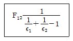
- 두면이 무한히 평행한 경우
- 한면이 다른면으로 완전히 포위된 경우
- 한점이 반구에 의하여 완전히 포위된 경우
- 한면은 무한 평면이고 다른 면은 한점인 경우
(정답률: 59%)
32. 그림은 어떤 회분 추출공정의 조성변화를 보여 주고 있다. 평형에 있는 추출 및 추잔상의 조성이 E와 R인 계에 추제를 더 가하면 M점은 그림 a, b, c, d 중 어느 쪽으로 이동하겠는가? (단, F는 원료의 조성이다.)
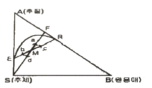
- a
- b
- c
- d
(정답률: 52%)
33. 40%의 수분을 포함하고 있는 고체 1000kg을 수분 10%까지 건조시킬 때 제거한 수분량은 약 몇 kg인가?
- 333
- 450
- 550
- 667
(정답률: 56%)
34. 증발장치에서 수증기를 열원으로 사용할 때 장점으로 거리가 먼 것은?
- 가열을 고르게 하여 국부과열을 방지한다.
- 온도변화를 비교적 쉽게 조절할 수 있다.
- 열전도도가 작으므로 열원쪽의 열전달 계수가 작다.
- 다중효용관, 압축법으로 조작할 수 있어 경제적이다.
(정답률: 57%)
35. 경사 마노미터를 사용하여 측정한 두 파이프 내 기체의 압력차는?
- 경사각의 sin값에 반비례한다.
- 경사각의 sin값에 비례한다.
- 경사각의 cos값에 반비례한다.
- 경사각의 cos값에 비례한다.
(정답률: 55%)
36. 2중관 열교환기를 사용하여 500kg/h의 기름을 240℃의 포화수증기를 써서 60℃에서 200℃까지 가열하고자 한다. 이때 총괄전열계수가 500kcal/m2*h*℃, 기름의 정압비열은 1.0kcal/kg*℃이다. 필요한 가열면적은 몇 m2인가?
- 3.1
- 2.4
- 1.8
- 1.5
(정답률: 36%)
37. 증발기에서 용액의 비점 상승도가 증가할수록 감소하는 것은?
- 가열 면적
- 유효 온도차
- 필요한 수증기의 양
- 용액의 비점
(정답률: 46%)
38. 다음 중 Drag Coefficient(C0)를 구하고자 할때 사용되는 법칙에 대한 설명으로 가장 옳은 것은?
- 레이놀즈수가 아주 작을 때 stoke의 법칙을 사용한다.
- 레이놀즈수와 관계없이 stoke의 법칙을 사용한다.
- 일반적으로 stoke의 법칙을 사용하되 레이놀즈수가 작을 때는 Newton의 법칙을 사용한다.
- 점도의 크기에 따라 stoke의 법칙과 Newton의 법칙을 구별하여 사용한다.
(정답률: 40%)
39. 벤젠과 톨루엔의 2성분계 정류조작에 있어서의 자유도(degrees of freedom)는 얼마인가?
- 0
- 1
- 2
- 3
(정답률: 59%)
40. 상계점(Plait point)에 대한 설명으로 옳지 않은 것은?
- 추출상과 추잔상의 조성이 같아지는 점이다.
- 상계점에서 2상(相)이 1상이 된다.
- 추출상과 평형에 있는 추잔상의 대응선(tie line)의 길이가 가장 길어지는 지점이다.
- 추출상과 추잔상이 공존하는 점이다.
(정답률: 59%)
3과목: 공정제어
41. 다음 공정에 단위 계단입력이 가해졌을 때 최종치는?
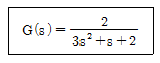
- 0
- 1
- 2
- 3
(정답률: 66%)
42. 다음 공정에 P제어기가 연결된 닫힌루프 제어계가 안정하려면 비례이득 Kc의 범위는? (단, 나머지 요소의 전달함수는 1이다.)
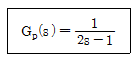
- Kc＜1
- Kc＞1
- Kc＜2
- Kc＞2
(정답률: 51%)
43. 특성방정식이
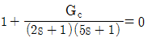
와 같이 주어지는 시스템에서 제어기 Gc로 비례제어기를 이용할 경우 진동응답이 예상되는 경우는? (단, Kc는 비례이득이다.)- Kc=0
- Kc=1
- Kc=-1
- Kc에 관계없이 진동이 발생된다.
(정답률: 49%)
44. 3개의 안정한 pole들로 구성된 어떤 3차계에 대한 Bode diagram에서 위상각은?
- 0° ~ -180° 사이의 값
- 0° ~ 180° 사이의 값
- 0° ~ -270° 사이의 값
- 0° ~ 270° 사이의 값
(정답률: 54%)
45. 안정도 판정을 위한 개회로 전달함수가
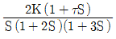
인 피드백 제어계가 안정할 수 있는 K와 τ의 관계는?- 12K＜(5+2τK)
- 12K＜(5+10τK)
- 12K＞(5+10τK)
- 12K＞(5+2τK)
(정답률: 46%)
46. 운전자의 눈을 가린 후 도로에 대한 자세한 정보를 주고 운전을 시킨다면 이는 어느 공정제어 기법이라고 볼 수 있는가?
- 되먹임제어
- 비례제어
- 앞먹임제어
- 분산제어
(정답률: 65%)
47. 설정값의 계단변화에 대하여 잔류편차가 발생하지 않는 것은?
- P제어기
- PI제어기
- PD제어기
- ON/OFF제어기
(정답률: 56%)
48. 일차계 공정에 사인파 입력이 들어갔을 때 시간이 충분히 지난 후의 출력은?
- 사인파 입력의 주파수가 커질수록 출력의 진폭은 작아진다.
- 공정의 시상수가 클수록 출력의 진폭도 커진다.
- 공정의 이득이 클수록 출력의 진폭은 작아진다.
- 출력의 진폭은 사인파 입력의 주파수와 공정의 시상수에는 무관하다.
(정답률: 38%)
49. 다음 블록선도에서 서보 문제(servo problem)의 전달함수는?
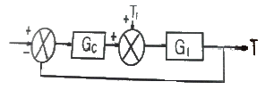
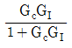
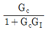
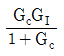
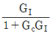
(정답률: 50%)
50. Anti Reset Windup에 관한 설명으로 가장 거리가 먼 것은?
- 제어기 출력이 공정 입력 한계에 걸렸을 때 작동한다.
- 적분 동작에 부과된다.
- 큰 설정치 변화에 공정 출력이 크게 흔들리는 것을 방지한다.
- Offset을 없애는 동작이다.
(정답률: 57%)
51. 현대의 화학공정에서 공정제어 및 운전을 엄격하게 요구하는 주요 요인으로 가장 거리가 먼 것은?
- 공정 간의 통합화에 따른 외란의 고립화
- 엄격해지는 환경 및 안전 규제
- 경쟁력 확보를 위한 생산공정의 대형화
- 제품 질의 고급화 및 규격의 수시 변동
(정답률: 45%)
52. 다음 공정의 단위 임펄스응답은?
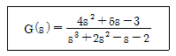
- y(t)=2et+e-t+2e-2t
- y(t)=et+2e-t+e-2t
- y(t)=et+e-t+2e-2t
- y(t)=2et+2e-t+e-2t
(정답률: 51%)
53.
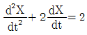
에서 X(t)의 Laplace 변환은? (단, X(0)=X’(0)=0)- 2s/(s2+2s)
- 2/(s+2)s
- 2/(s3+2s2)
- 2s/(s3-2s)
(정답률: 55%)
54. 다음 block선도로부터 전달함수 Y(s)/X(s)를 구하면?
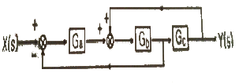
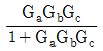
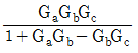
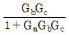
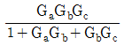
(정답률: 57%)
55. 여름철 사용되는 일반적인 에어콘(air conditioner)의 동작에 대한 설명 중 틀린 것은?
- 온도 조절을 위한 피드백 제어 기능이 있다.
- 희망온도가 피드백 제어의 설정값에 해당 된다.
- 냉각을 위하여 에어콘으로 흡입되는 공기의 온도변화가 외란에 해당된다.
- 사용되는 제어방법은 주로 On/Off제어이다.
(정답률: 55%)
56. 다단제어에 대한 설명으로 옳은 것은?
- 종속제어기 출력이 주제어기의 설정점으로 작용하게 된다.
- 종속제어루프 공정의 동특성이 주제어루프 공정의 동특성보다 충분히 빠를수록 바람직하다.
- 주제어루프를 통하여 들어오는 외란을 조기에 보상하는 것이 주 목적이다.
- 종속제어기는 빠른 보상을 위하여 피드포워드 제어알고리즘을 사용한다.
(정답률: 50%)
57. 순수한 적분공정에 대한 설명으로 옳은 것은?
- 진폭비(Amplitude ratio)는 주파수에 비례 한다.
- 입력으로 단위임펄스가 들어오면 출력은 계단형 신호가 된다.
- 작은 구멍이 뚫린 저장탱크의 높이와 입력흐름의 관계는 적분공정이다.
- 이송지연(transportation lag) 공정이라고 부르기도 한다.
(정답률: 46%)
58. 측정 가능한 외란(measurable disturbance)을 효과적으로 제거하기 위한 제어기는?
- 앞먹임 제어기(Feedforward Controller)
- 되먹임 제어기(Feedback Controller)
- 스미스 예측기(Smith Predictor)
- 다단 제어기(Cascade Controller)
(정답률: 62%)
59. 초기상태가 공정입출력이 0이고 정상상태일때, 어떤 선형 공정에 계단 입력 u(t)=1을 입력했더니, 출력 y(t)는 y(1)=0.1, y(2)=0.2, y(3)=0.4이었다. 입력 u(t)=0.5를 입력할 때 출력은 각각 얼마인가?
- y(1)=0.1, y(2)=0.2, y(3)=0.4
- y(1)=0.⑤, y(2)=0.1, y(3)=0.2
- y(1)=0.1, y(2)=0.3, y(3)=0.7
- y(1)=0.2, y(2)=0.4, y(3)=0.8
(정답률: 56%)
60. 어떤 항온조에서 항온조 내의 온도계가 나타내는 온도와 항온조 내의 실제 유체온도 사이의 관계는 이득이 1인 1차계로 나타낼 수 있으며 이때 시간상수는 0.2min이다. 평형상태에 도달한 후 항온조의 유체온도가 1℃/min의 속도로 평형상태의 값에서 시간에 따라 선형적으로 증가하기 시작하였다. 이 경우 1min경과 후 온도계의 온도와 항온조 내 실제 유체온도 사이의 온도차는 얼마인가?
- 0.2℃
- 0.8℃
- 1.5℃
- 2.0℃
(정답률: 15%)
4과목: 공업화학
61. H2와 Cl2의 직접결합에 의한 합성염산법에서 사용되는 장치가 아닌 것은?
- 촉매실
- 연소실
- 냉각기
- 흡수기
(정답률: 45%)
62. 아닐린에 대한 설명으로 옳은 것은?
- 무색, 무취의 액체이다.
- 니트로벤젠은 아닐린으로 산화될 수 있다.
- 비점이 약 184℃이다.
- 알코올과 에테르에 녹지 않는다.
(정답률: 58%)
63. 접촉식 황산제조 방법에 대한 설명 중 옳지 않은 것은?
- 백금, 바나듐 등의 촉매가 이용된다.
- SO3는 물에만 흡수시켜야 한다.
- 촉매층의 온도는 410~420℃로 유지하면 좋다.
- 주요 공정별로 온도 조절이 중요하다.
(정답률: 66%)
64. 다음 중 Nylon 6 제조의 주된 원료로 사용되는 것은?
- 카프로락탐
- 세바크산
- 아디프산
- 헥사메틸렌디아민
(정답률: 62%)
65. 니트로벤젠을 환원시켜 아닐린을 얻고자 할 때 사용하는 것은?
- Fe, HCl
- Ba, H2O
- C, NaOH
- S, NH4Cl
(정답률: 60%)
66. 분자량 1.0× 104g/mol인 고분자 100g과 분자량 2.5×104 g/mol인 고분자 50g, 그리고 분자량 1.0×105g/mol인 고분자 50g이 혼합되어 있다. 이 고분자 물질의 수평균 분자량은?
- 16000
- 28500
- 36250
- 57000
(정답률: 54%)
67. 다음 중 고분자의 유리전이온도를 측정하는 방법이 아닌 것은?
- differential scanning calorimetry
- dilatometry
- thermal gravimetric analysis
- dynamic mechanical analysis
(정답률: 52%)
68. 인광석을 가열처리하여 불소를 제거하고 아파 타이트 구조를 파괴하여 구용성인 비료로 만든 것은?
- 메타인산칼슘
- 소성인비
- 과린산석회
- 인산암모늄
(정답률: 55%)
69. 무수염산의 제법에 속하지 않는 것은?
- 직접합성법
- 농염산증류법
- 염산분해법
- 흡착법
(정답률: 45%)
70. 다음 중 중과린산 석회의 반응은?
- Ca(PO4)2+2H2SO4+5H2O⇔CaH4(PO4)2∙H2O+2[CaSO4∙2H2O]
- Ca3(PO4)2+4H3PO4+3H2O⇔2[CaH4(PO4)2∙H2O]
- Ca3PO4+4HCl⇔CaH4(PO4)2+2CaCl2
- CaH4(PO4)2+NH3⇔NH4H2PO4+CaHPO4
(정답률: 50%)
71. 다음 중 황산암모늄의 제조법이 아닌 것은?
- 합성황안법
- 순환황안법
- 변성황안법
- 부생황안법
(정답률: 50%)
72. 석유정제에 사용되는 용제가 갖추어야 하는 조건이 아닌 것은?
- 선택성이 높아야 한다.
- 추출할 성분에 대한 용해도가 높아야 한다.
- 용제의 비점과 추출성분의 비점의 차이가 적어야 한다.
- 독성이나 장치에 대한 부식성이 적어야 한다.
(정답률: 66%)
73. 산과 알코올이 어떤 반응을 일으켜 에스테르가 생성되는가?
- 검화
- 환원
- 축합
- 중화
(정답률: 62%)
74. 암모니아 소오다법에서 NH3회수에 사용하는 것은?
- CaCO3
- CaCl2
- Ca(OH)2
- H2O
(정답률: 50%)
75. HNO3 14.5%, H2SO4 50.5%, HNOSO4 12.5%, H2O 20.0%, nitrobody 2.5%의 조성을 가지는 혼산을 사용하여 toluene으로부터 mono nitrotoluene을 제조하려고 한다. 이때 1700kg의 toluene을 12000kg의 혼산으로 니트로화했다면 DVS(dehydrating value of sulfuric acid)는?
- 1.87
- 2.21
- 3.04
- 3.52
(정답률: 45%)
76. 스타이렌-부타디엔-스타이렌 블록공중합체를 제조하는 방법은?
- 양이온 중합
- 리빙 음이온 중합
- 라디칼 중합
- 메탈로센 중합
(정답률: 63%)
77. 황산 공업의 원료가 될 수 없는 것은?
- 섬아연광
- 자류철광
- 황화철광
- 자철광
(정답률: 58%)
78. 중질유의 점도를 내릴 목적으로 중질유를 약 20기압과 약 500℃에서 열분해시키는 공정은?
- Coking process
- Hydroforming process
- Reforming process
- Visbreaking process
(정답률: 61%)
79. 질산의 직접 합성 반응이 다음과 같을 때 반응 후 응축하여 생성된 질산 용액의 농도는 얼마인가?
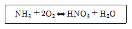
- 68%
- 78%
- 88%
- 98%
(정답률: 63%)
80. 장치재료의 선택에는 재료가 사용되는 환경에서의 안정성이 중요한 변수가 된다. 다음의 재료 변화에 대한 설명 중 반응기구가 다른 것은?
- PbS로부터 Pb의 석출
- Fe 표면위에 녹 [Fe(OH)3] 생성
- Al 표면위에 Al2O3 생성
- 산용액 내에서 Cu와 Zn금속이 접할 때 Zn의 용출
(정답률: 43%)
5과목: 반응공학
81. 그림과 같이 직렬로 연결된 혼합 흐름 반응기에서 액상 1차 반응이 진행될 때 입구의 농도가 C0이고 출구의 농도가 C2일 때 부피가 최소로 되기 위한 조건이 아닌 것은?
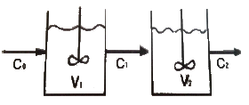
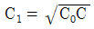
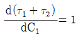
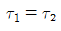
- V1=V2
(정답률: 51%)
82. 무차원 반응속도상수(dimensionless reaction rate group)에 대한 설명으로 옳은 것은?
- 전화율(conversion)에 대한 공간시간(space time)의 도표에서 매개변수 (parameter)로 중요하다.
- 1차 반응에서는 k 이다.
- 2차 반응에서는 kt이다.
- 3차 반응에서는 kCA0t이다.
(정답률: 44%)
83. CNBr(A)과 메틸아민(B)와의 액상반응은 2차 반응으로 알려져 있으며 10℃에서 k=2.22L/s*mol 이다. 플러그흐름 반응기에서 체류시간이 4초이고 CA0=CB0=0.1mol/L일 때 반응기를 나가는 반응생성물 중의 CNBr 농도 CA는 약 얼마인가?
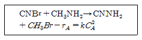
- 0.021
- 0.032
- 0.045
- 0.⑤3
(정답률: 23%)
84. 단일 이상형 반응기(single ideal reactor)에 해당하지 않는 것은?
- 플러그흐름 반응기(plug flow reactor)
- 회분식 반응기(batch reactor)
- 매크로유체 반응기(macro fluid reactor)
- 혼합흐름 반응기(mixed flow reactor)
(정답률: 62%)
85. CSTR에 대한 설명으로 옳지 않은 것은?
- 비교적 온도 조절이 용이하다.
- 약한 교반이 요구될 때 사용된다.
- 높은 전화율을 얻기 위해서 큰 반응기가 필요하다.
- 반응기 부피당 반응물의 전화율은 흐름 반응기들 중에서 가장 작다.
(정답률: 58%)
86. 비가역 직렬반응 A → R →S에서 1단계는 2차반응, 2단계는 1차반응으로 진행되고 R이 원하는 제품일 경우 다음 설명 중 옳은 것은?
- A의 농도를 높게 유지할수록 좋다.
- 반응 온도를 높게 유지할수록 좋다.
- 혼합 반응기가 플러그 반응기보다 성능이 더 좋다.
- A의 농도는 R의 수율과 직접 관계가 없다.
(정답률: 60%)
87. 다음과 같은 액상 등온반응이 순수한 A로부터 출발하여 혼합반응기에서 전화율 XAf=0.90, R의 총괄수율 0.75로 진행된다면 반응기를 나오는의 농도는 몇 mol/L인가? (단, CA0=5.0mol/L이다.)
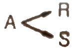
- 0.75
- 3.38
- 3.75
- 4.5
(정답률: 31%)
88. 균일상 1차 반응을 이용하여 그림과 같이 크기가 다른 두 개의 연속 혼합류 반응기에서 어떤 생성물을 얻고자 한다. 다음 중 1호 반응기의 공간시간 τ1을 가장 옳게 표현한 식은? (단, FA0은 반응물의 몰 공급속도, CA0는 반응물 중 A의 초기농도, V1은 반응기 부피이다.)
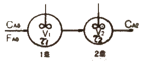
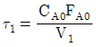
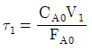
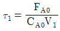
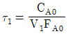
(정답률: 58%)
89. 다음 반응에서 -ln(CA/CA0)를 t로 plot하여 직선을 얻었다. 이 직선의 기울기는? (단, 두 반응 모두 1차 비가역반응이다.)
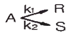
- k1
- k2
- k1/k2
- k1+k2
(정답률: 52%)
90. 플러그흐름반응기 또는 회분식 반응기에서 비가역 직렬 반응 A → R → S, k1=2min-1, k2=1min-1이 일어날 때 CR이 최대가 되는 시간은?
- 0.301
- 0.693
- 1.443
- 3.332
(정답률: 44%)
91. 유동층 반응기에 대한 설명 중 가장 거리가 먼 내용은?
- 유동층에서의 전화율은 고정층 반응기에 비하여 낮다.
- 유동화 물질은 대부분 고체이다.
- 석유나프타의 접촉분해 공정에 적합하다.
- 작은 부피의 유체를 처리하는데 적합하다.
(정답률: 36%)
92. 다음 그림에 해당하는 반응 형태는?
(정답률: 33%)
93. 다음 중 Damkohler가 화학반응속도론에 기여한 내용은?
- 전이상태(transition state)에 대한 양자 통계론적인 취급법이 화학반응 속도론에 적용된다는 사실을 지적하였다.
- Langmuir의 활성화 흡착설을 촉매반응 등의 불균일계 반응에 적용, 해석하였다.
- 유체역학적 인자들과 경계층 현상 등이 화학반응 속도에 영향을 미친다는 사실을 지적하였다.
- 연쇄반응(chain reaction)에 대한 이론을 확립하였다.
(정답률: 40%)
94. 1차 직렬반응 일 경우 로 볼 수 있다. 이 때 k 값은?
- 11.00S-1
- 9.52S-1
- 0.11S-1
- 0.09S-1
(정답률: 37%)
95. Arrhenius법칙에서 속도상수 k와 반응온도 T의 관계를 옳게 설명한 것은?
- k와 T는 직선관계가 있다.
- ln K와 1/T은 직선관계가 있다.
- ln K와 ln(1/T)은 직선관계가 있다.
- ln K와 T는 직선관계가 있다.
(정답률: 63%)
96. A →3R인 반응에서 A만으로 시작하여 완전히 전화되었을 때 계의 부피변화율은 얼마인가? (단, 기상반응이며, 반응압력은 일정하다.)
- 0.5
- 1.0
- 1.5
- 2.0
(정답률: 52%)
97. 다음은 단열 조작선의 그림이다. 그림의 기울기는 로 나타내는데 이 기울기가 큰 경우에는 어떤 형태의 반응기가 가장 좋겠는가? (단, Cp는 정압열용량, △Hr은 반응열이다.)
- 플러그흐름(plug flow)
- 혼합흐름(mixed flow)
- 교반형
- 순환형
(정답률: 56%)
98. 어떤 물질의 분해반응은 1차반응으로, 99%까지 분해하는데 6646초가 소요되었다고 한다면, 50%까지 분해하는데 몇 초가 걸리겠는가?
- 100초
- 500초
- 1000초
- 1500초
(정답률: 60%)
99. 방사성 물질의 감소는 1차반응 공정을 따른다. 방사성 Kr-89(반감기 = 76min)을 1일 동안 두면방사능은 처음 값의 약 몇 배가 되는가?
- 1×10-6
- 2×10-6
- 1×10-5
- 2×10-5
(정답률: 53%)
100. 균일계 액상 병렬반응이 다음과 같을 때 R의 순간 수율은?
- 1/(1+CB)
- 1/(1+CA)
(정답률: 50%)
이유는 표준디젤사이클은 4단계로 이루어져 있으며, P-V선도에서는 각 단계의 압력과 부피 변화를 나타냅니다. ""는 표준디젤사이클의 3단계인 압축 과정을 나타내며, 압력이 증가하면서 부피가 감소하는 과정을 나타냅니다. 따라서 P-V선도에서는 ""가 해당됩니다.